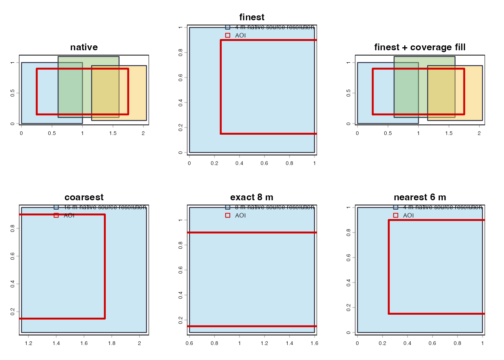
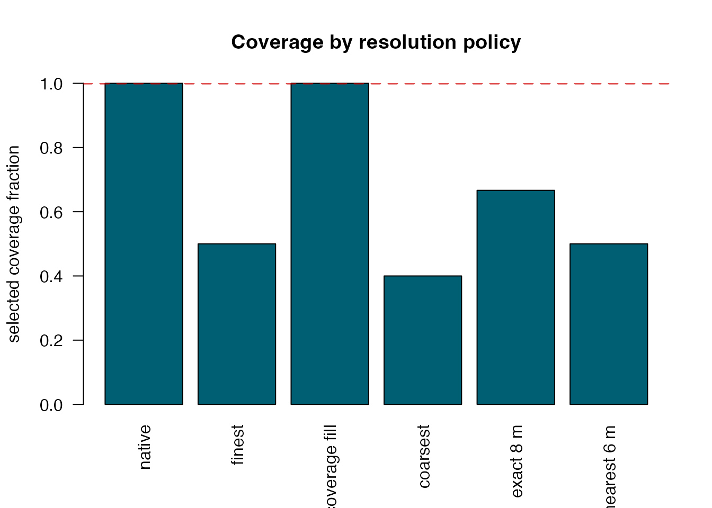

Compare Resolution Policies
Source:vignettes/example-resolution-policies.Rmd
example-resolution-policies.Rmd
library(terra)
#> terra 1.9.27
example <- bt_example_setup()
#> Synthetic miniature BlueTopo fixture for package demonstration.
#> Fixture-only option: bluertopo.allow_test_hosts = TRUE enables local file URLs.
example_aoi <- example$aoiEvery rendered output on this page uses: Synthetic miniature BlueTopo fixture for package demonstration.
Smaller meter values mean finer native source resolution.
resolution selects source tiles; it does not resample.
coverage = "fill" can add fallback source tiles.
output_resolution is the argument that changes the output
grid.
Policies
policies <- list(
native = list(resolution = "native", coverage = "warn"),
finest = list(resolution = "finest", coverage = "ignore"),
`finest + coverage fill` = list(resolution = "finest", coverage = "fill"),
coarsest = list(resolution = "coarsest", coverage = "ignore"),
`exact 8 m` = list(resolution = 8, coverage = "ignore"),
`nearest 6 m` = list(resolution = bluertopo_resolution("nearest", value = 6), coverage = "ignore")
)
policy_tiles <- lapply(policies, function(policy) {
bluertopo_tiles(
example_aoi,
resolution = policy$resolution,
coverage = policy$coverage,
quiet = TRUE
)
})
policy_summary <- do.call(rbind, lapply(names(policy_tiles), function(name) {
tiles <- policy_tiles[[name]]
df <- as.data.frame(tiles)
coverage <- attr(tiles, "coverage")
data.frame(
policy = name,
selected_tile_count = nrow(df),
selected_resolutions = paste(sort(unique(df$resolution_m)), collapse = ", "),
selected_coverage_fraction = coverage$selected_coverage_fraction,
selected_aoi_fraction = coverage$selected_aoi_fraction,
target_met = coverage$target_met,
stringsAsFactors = FALSE
)
}))
bt_display_table(policy_summary)| policy | selected_tile_count | selected_resolutions | selected_coverage_fraction | selected_aoi_fraction | target_met |
|---|---|---|---|---|---|
| native | 3 | 4, 8, 16 | 1.000 | 1.000 | TRUE |
| finest | 1 | 4 | 0.500 | 0.500 | FALSE |
| finest + coverage fill | 3 | 4, 8, 16 | 1.000 | 1.000 | TRUE |
| coarsest | 1 | 16 | 0.400 | 0.400 | FALSE |
| exact 8 m | 1 | 8 | 0.667 | 0.667 | FALSE |
| nearest 6 m | 1 | 4 | 0.500 | 0.500 | FALSE |
Tile Selection Maps
old_par <- par(mfrow = c(2, 3), mar = c(2, 2, 3, 1))
for (name in names(policy_tiles)) {
bt_plot_tiles(policy_tiles[[name]], example_aoi, main = name)
}
Synthetic miniature BlueTopo fixture for package demonstration: selected tiles under different native source-resolution policies.
par(old_par)Coverage By Policy
barplot(
stats::setNames(policy_summary$selected_coverage_fraction, policy_summary$policy),
ylim = c(0, 1),
las = 2,
col = "#005f73",
ylab = "selected coverage fraction",
main = "Coverage by resolution policy"
)
abline(h = 1, col = "#d00000", lwd = 2, lty = 2)
Synthetic miniature BlueTopo fixture for package demonstration: selected coverage fraction by resolution policy.
Use an explicit output grid only when resampling is intended.